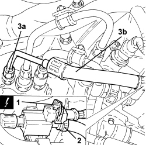

1056F75 FUEL RETURN PIPE FROM PRESSURE PUMP - R.R.
- Path
- Procedures > 10 ENGINE > 1056 PETROL INJECTION SYSTEM > 1056F PETROL DIRECT INJECTION SYSTEM > 1056F75 FUEL RETURN PIPE FROM PRESSURE PUMP - R.R.
- Kind
- repair procedure (removal / refitting; the operation number is the code)
- Applies to
- engines: 3.2 JTS; all production periods
- Interactive page
- https://sloeber94.github.io/elrnDB-aBrrSpdr/en/#/946001928
Applies to: engines: 3.2 JTS; all production periods
 Removing
Removing
 Refitting
Refitting1. Disconnect the electrical connection for the fuel shut-off solenoid valve.
Description | Connector | |
|---|---|---|
1 | Fuel shut-off solenoid valve |
2. Loosen the band and disconnect the outlet pipe from the fuel shut-off solenoid valve.
3. Loosen the connector (3a), pressure pump side, for the return pipe (3b) complete with solenoid valve.

Applies to: engines: 3.2 JTS; all production periods
Refitting
Removing- Tighten the connector, pressure pump side, for the return pipe complete with solenoid valve.
- Connect the outlet pipe from the the fuel shut-off solenoid valve and secure it using the band.
- Connect the electrical connection for the fuel shut-off solenoid valve.